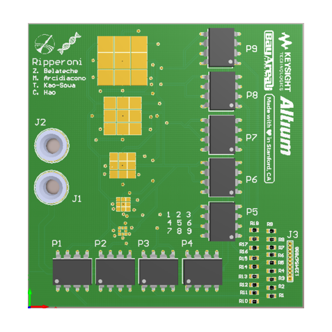

SSI Biology Team
Stanford Student Space Initiative and Sequencing DNA in Space
For more information on SSI Bio: https://stanfordssi.org/teams/biology
Stanford Space Initiative Biology team is attempting to synthesize DNA in space for the first time. The general plan is this: 1) develop a form of enzymatic DNA synthesis with a relatively simple procedure. Right now we're using Terminal Deoxynucleotidyl Transferase (TDT) and testing a couple different ways of utilizing it for DNA synthesis. This is a cool project in its own right, as it would have the ability to easily synthesize primers and other important sequences without requiring a lot of lab equipment. 2) Developing an electrowetting platform that can do "lab on a chip" reactions autonomously. This is what will be launched into space and perform the reaction. 3) Develop the device that all this will happen under. It has to be launched from a satellite, be resistant to changing forces and space debris, and contain several othe aspects of the experiment like a UV chamber, waste area, and adaptive measures for any errors that occur with power or the reagents. 4) We need a detection mechanism to make sure that we actually synthesized the primer properly and send that information back to earth.
In a nutshell that's SSI Bio. There's a lot of cool biological, electrical, computational, and mechanical engineering that's going into this project. We're currently in the early stages of developing the enzymatic synthesis and the microfluidics device. The goal for this year is to develop a synthesis reaction that works on the ground, and a solid microfluidics board that can carry out initial testing (prototype for testing to the right). There's a long way to go, but we have awesome people leading the project and it's hard not to feel confident when there are so many different smart people tackling this. I'll update this as things move along, hopefully there'll be more information about the reaction and the device soon!